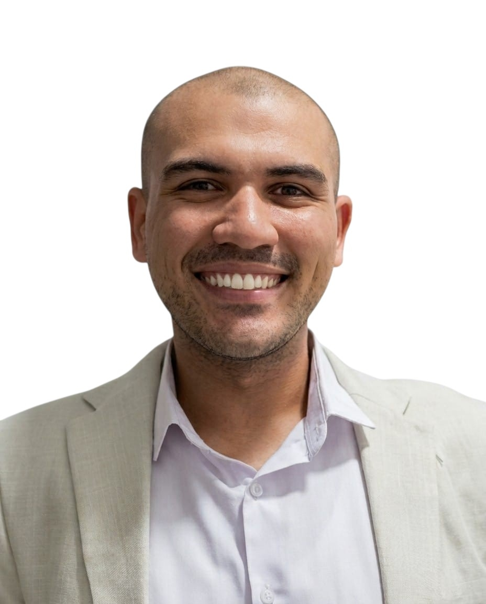

|
 |
- I am an aspiring Full Stack Web Developer with a strong background in accounting, finance operations, and ERP systems. After several years of professional experience in finance and business environments, I decided to pursue a career in web development, combining my analytical mindset with a passion for building modern, user-focused applications. - My previous experience has strengthened my attention to detail, problem-solving abilities, communication skills, and understanding of real business workflows. These qualities help me develop solutions that are not only functional but also aligned with business needs. - In addition to web development, I have experience with SAP ERP, advanced Microsoft Excel, financial analysis, SQL, and Git/GitHub. I am committed to continuous learning and enjoy turning ideas into practical, efficient, and scalable web applications. - I am currently building projects to strengthen my technical skills and prepare for opportunities as a Full Stack Web Developer. |